| Previous | Table of Contents | Next |
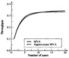
FIGURE 34.1 Throughput with exact MVA and five iterations of approximate MVA.
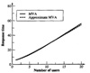
FIGURE 34.2 Responce time exact MVA and five itertions of approximate MVA.
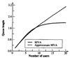
FIGURE 34.3 The CPU queue length with exact MVA and five iterations of approximate MVA.
The asymptotic bounds presented earlier in Section 33.6 are applicable under very general conditions since very few assumptions are required for their derivation. However, they are only one sided in the sense that it is not possible to put a good lower bound on throughput or an upper bound on the response time. Zahorjan et al. (1982) derived a set of two-sided bounds based on the observation that a balanced system has a better performance than a similar unbalanced system. These bounds, called balanced job bounds, are presented in this section.
A system without a bottleneck device is called a balanced system. In such a system, total service time demands on all devices are equal. This is a preferable system in the sense that no single device is the bottleneck. An unbalanced system’s performance can always be improved by replacing the bottleneck device with a faster device. As we improve the bottleneck device, the system performance improves until another device becomes a bottleneck. Based on this argument, the response time and throughput of a timesharing system can be bounded as follows:
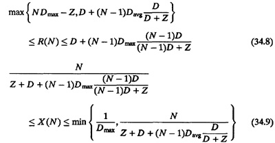
Here, Davg = D/M is the average service demand per device. Equations (34.8) and (34.9) are known as balanced job bounds. These bounds are very tight in that the upper and lower bounds are very close to each other and to the actual performance.
For batch systems, the bounds can be obtained by substituting Z = 0 in Equations (34.8) and (34.9).
In this section we assume that all service centers except terminals are fixed-capacity service centers. Terminals are represented by delay centers. No other delay centers are allowed because the presence of delay centers invalidates several arguments related to Dmax and Davg.
We now derive the bounds following these steps.
Any timesharing system can be divided into two subsystems: the terminal subsystem consisting of terminals only and the central subsystem consisting of the remaining devices. Consider a system whose central subsystem is balanced in the sense that all M devices have the same total service demand:
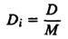
Here, D is the sum of total service demands on the M devices. The device response times using MVA (discussed in Section 34.2) are given by
Ri(N) = {Si{1 + Qi(N – 1)}, i = 1, 2, ...,M
Since the system is balanced, all Qi’s are equal, and we have
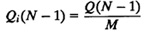
Here, Q(j) (without any subscript) denotes the total number of jobs in the central subsystem when there are j jobs in the system. The number of jobs in the terminal subsystem is j – Q(j).
The system response time is given by
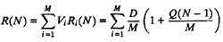
or
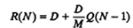
A noniterative procedure to bound Q(N) is based on the following arguments. If we replace the system with N workstations so that each user has his/her own workstation and the workstations are identical to the original system, then the new environment would have a better response time and better throughput. As a result, the users will be spending less of their time waiting for the response. The new environment consists of N single-user systems and is therefore easy to model. Each user spends his/her time in cycles consisting of Z units of time thinking and D units of time computing. Each job has a probability D/(D + Z) of being in the central subsystem (not at the terminal). Thus
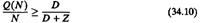
Now consider another environment like the previous one except that each user is given a workstation that is N times slower than the system being modeled. This new environment has a total computing power equivalent to the original system but there is no sharing. The users would be spending more time in the central subsystem. That is,
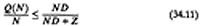
Equations (34.10) and (34.11) combined together result in the following bounds on the number of jobs at the devices:
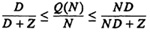
or
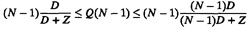
In terms of response time, this results in the following bounds:
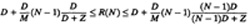
This completes the first step of the derivation.
Suppose we have an unbalanced system such that the service demands on the ith device is Di. Without loss of generality, we can assume that the devices in the central system are numbered such that the demands D1, D2, ..., DM are in a nondecreasing order. In this case, the Mth device is the slowest (bottleneck) device and the first device is the fastest device. We now perform the following experiment. We make the bottleneck device slightly faster and the fastest device slightly slower. We reduce the service time of the bottleneck device by a small amount ΔD and increase the service time of the fastest device by ΔD. The change in the bottleneck device improves the performance while that in the fastest device may degrade the performance slightly. Since the system performance is more sensitive to the bottleneck than any other device, the net effect should be an increase in performance. We continue this process until the bottleneck device’s demand matches that of another device. At this point we will have two bottlenecks. We take the two fastest devices and two slowest devices in the system and continue reducing the service demands of bottlenecks while increasing the service demands of the fast devices. This will improve performance until a third device joins the bottleneck group. At this point, we add a third device to the “fast” group and keep the changes going. In the end we will have a balanced system with all devices having service demands Di = Davg, where
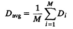
| Previous | Table of Contents | Next |
){kind=link}
){kind=link}
){kind=link}
){kind=link}
){kind=link}
){kind=link}